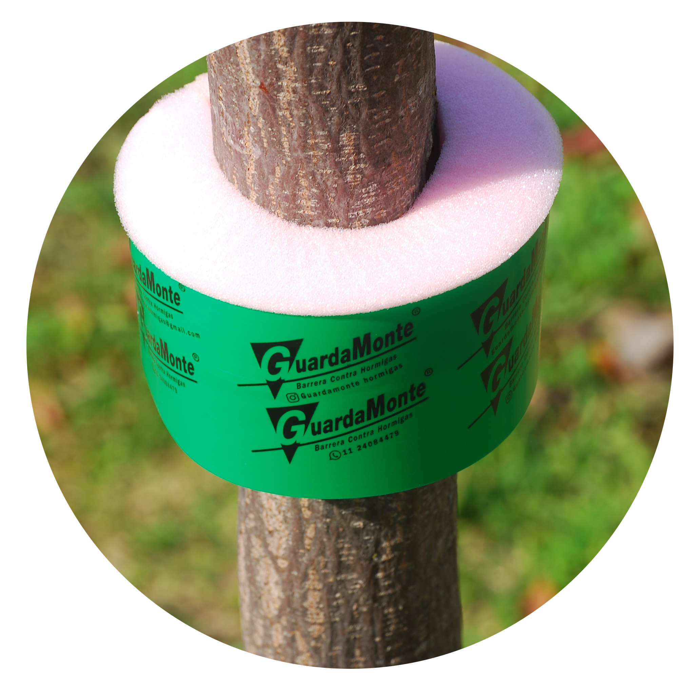
GuardaMonte fabrica y vende Barreras contra Hormigas GuardaMonte para árboles en vases de 50 unidades de 1 metro.
Cada metro rinde para proteger 4 arboles y el envase de 50 metro para 200.
GM entrega (o envia) al menos 1 envase cerrado de 50 metros que rinde para 200 protecciones.
Envios a todo el pais.
Acordar entrega y envio por WhatsApp
Pagos por deposito en cuenta y por Mercado Pago con todas las tarjetas.
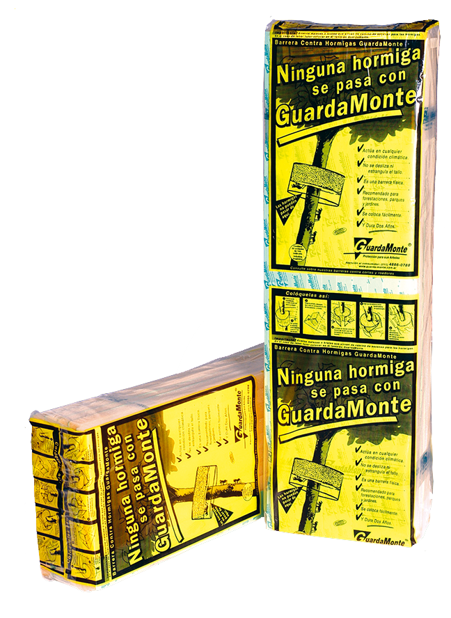
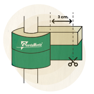
Tomar la Barrera GuardaMonte y rodear el tallo del árbol a proteger. Sin oprimir la espuma, cortar dejando 6 cms de exceso.
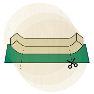
Tomar la porción y despegar 3 cms de espuma de cada extremo y luego cortarlos.
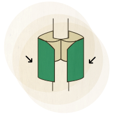
Colocar la Barrera sobre el tronco de modo que los extremos de la espuma se toquen.
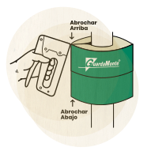
Con una abrochadora fijar por arriba y por debajo los extremos de la lámina.
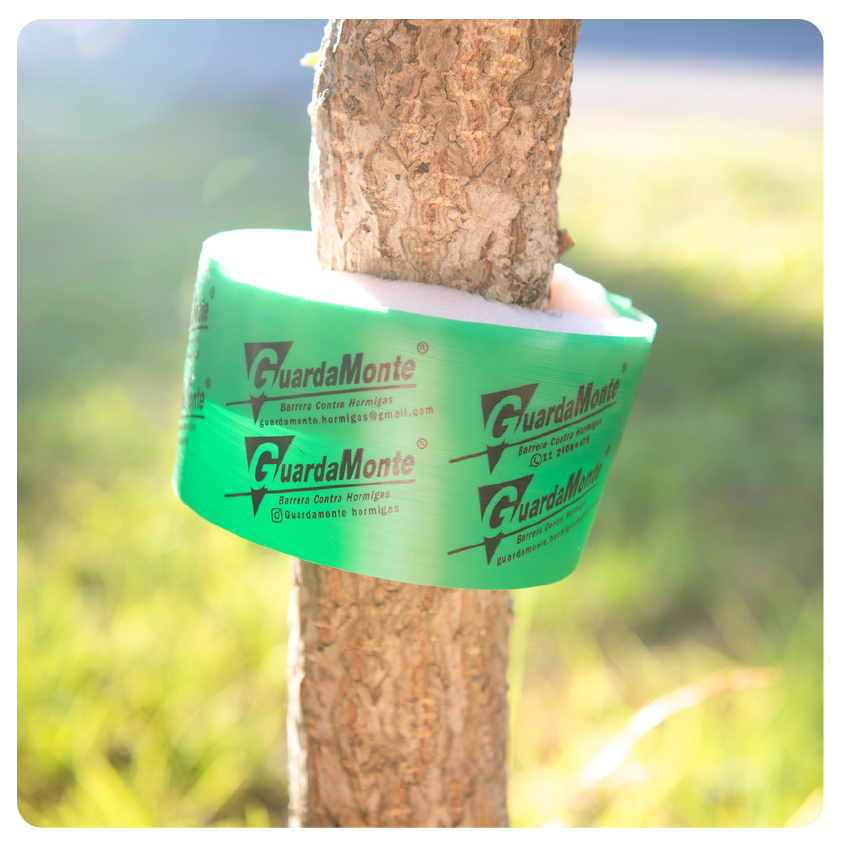
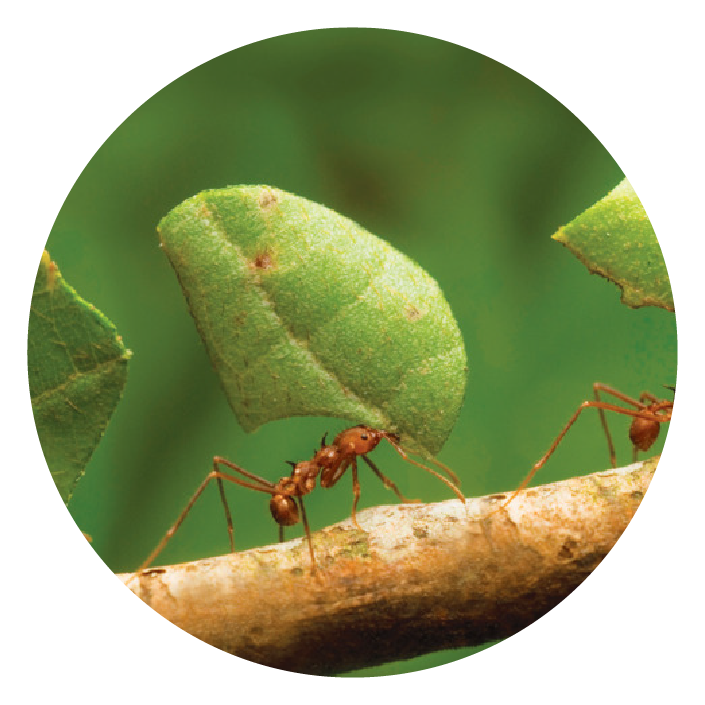
Se conocen alrededor de 40 especies de hormigas cortadoras o podadoras. Todas ellas son americanas. Estas hormigas ocasionan pérdidas importantes en plantaciones arbóreas jóvenes y en sus rebrotes.
El daño que producen se genera por defoliación y sobre todo porque atacan a los tejidos en crecimiento, tejidos que tardan mucho tiempo en ser reconstruidos por las plantas afectadas. La acción de las hormigas cortadoras no es un problema cuando se produce en ambientes naturales ya que los niveles de defoliación están repartidos en el tiempo y el espacio y entre las diversas especies de plantas.
Sin embargo, cuando se reemplaza esa diversidad por monocultivos o especies exóticas, las hormigas las atacan por ser el único tipo de recurso que encuentran. En este tipo de entornos, los daños son cuantiosos y las especies vegetales pueden correr peligro. Esto es justamente lo que sucede en zonas de producción intensiva y en espacios verdes urbanos.
Tradicionalmente, las hormigas han sido controladas por productos químicos, los cuales son poco eficientes. Primero, son poco específicos porque no sólo matan a las hormigas, sino que también afectan a otros organismos. Segundo, son poco efectivos porque eliminan a las obreras y no a la reina, la cual sigue fabricando nuevas obreras. Tercero, contaminan a otros organismos de la cadena alimenticia ya que no se degradan y se acumulan. GuardaMonte constituye una barrera ecológica para la defoliación por hormigas cortadoras de hojas o podadoras. Su acción no pone en riesgo el ambiente ni a ningún organismo.
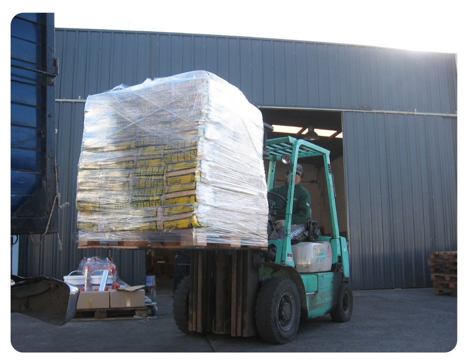
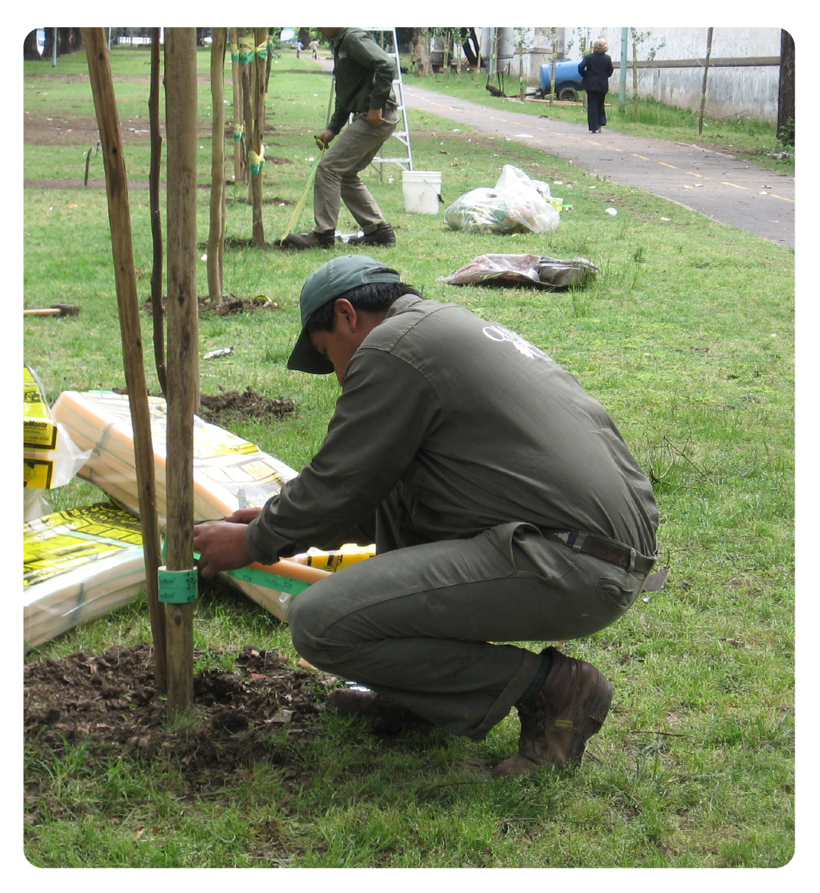
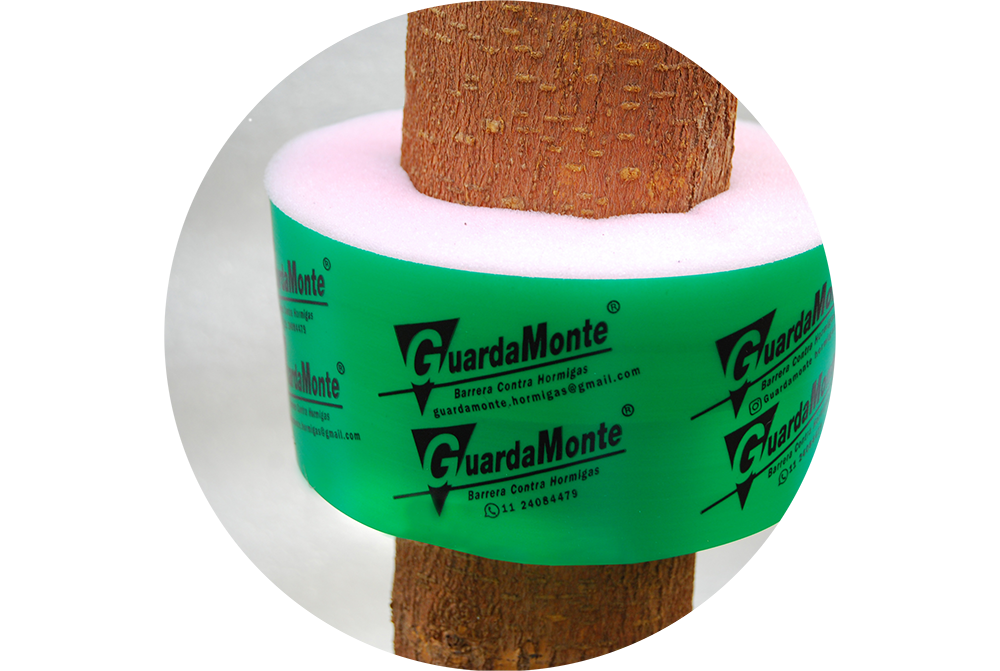
Contactanos y empezá tu experiencia.
Cuidar de tu naturaleza
sin dañar ... no tiene precio.
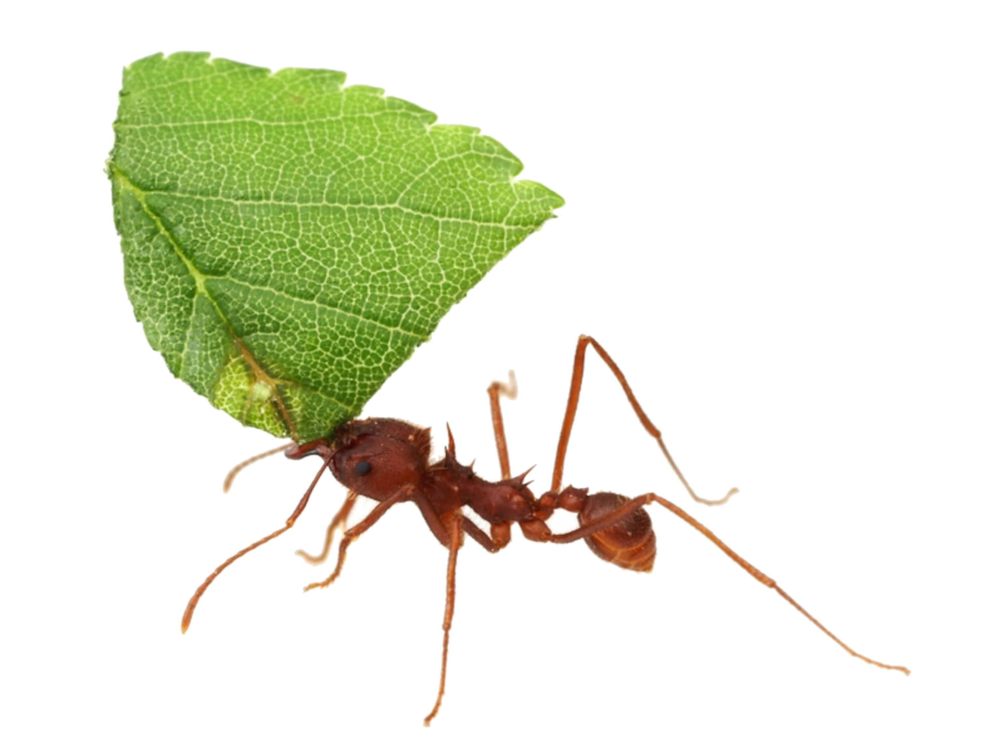
¿Para qué sirve GuardaMonte?
GuardaMonte protege a los árboles de la acción de las hormigas cortadoras sin recurrir a elementos nocivos para el ambiente. Es un producto ecológico ideal para el cuidado de árboles jóvenes.